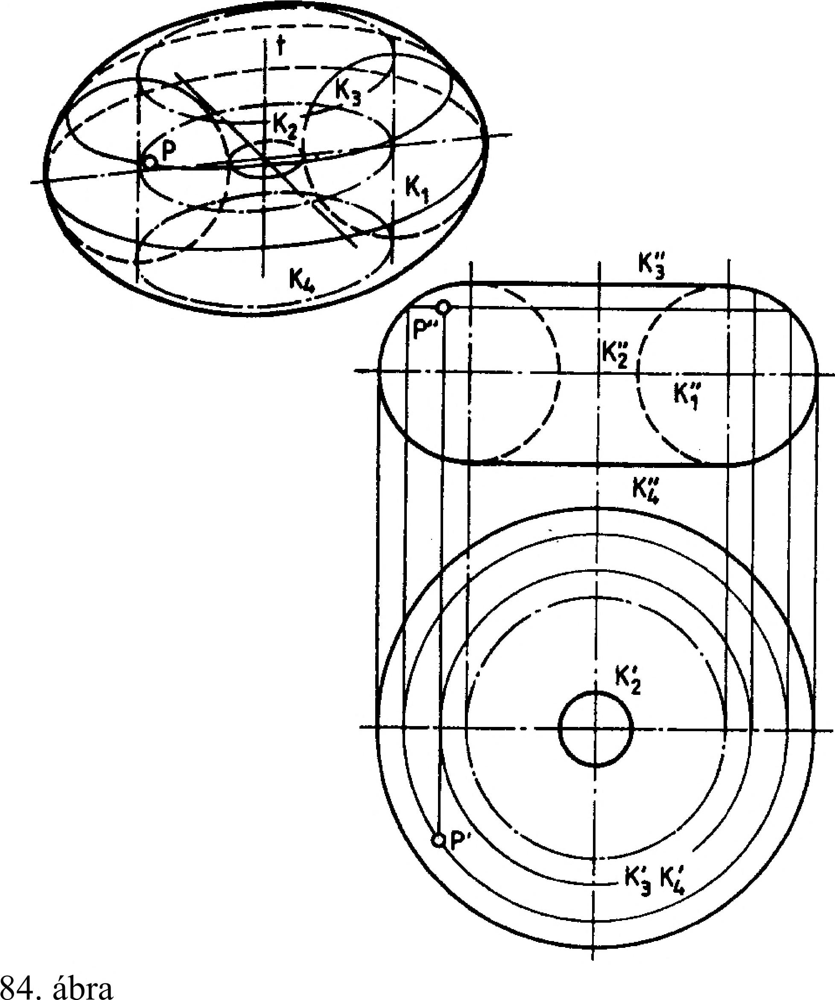

3. Vetületi ábrázolás 3.4.1. A henger vetületi ábrázolása A henger olyan forgástest, amelyet a forgástengelyével párhuzamos egyenes forgatásával kapunk. Az egyenest hengeralkotónak és a forgatásával kirajzolt felületet hengerpalástnak nevezzük. A henger alap- és fedőlapja kör alakú, alkotói párhuzamosak. A szemléltető ábrán és vetületi képeivel ábrázolt henger tengelye és alkotói az első képsíkra merőlegesek, a henger az első képsíkhoz viszonyítva vetítő helyzetű (81. ábra). Alap- és fedőlapjának első képe egybeesik, és ez a kör a henger első képe, vagyis felülnézete. A hengert érintő második vetítősugarak meghatározzák a henger második kontúralkotóit, az a és b jelű alkotókat. A kontúralkotók vetületei a zárólapok vetületével kiegészítve meghatározzák a henger második képének határát, amely álló körhenger esetén derékszögű négyszög. A hengert érintő harmadik vetítősugarak meghatározzák a henger harmadik kontúralkotóit, a c és d alkotókat, amelyek vetületei a zárólapok vetületével kiegészítve meghatározzák a henger harmadik képének határát. 3.4.2. A kúp vetületi ábrázolása Második káphatár A kúp olyan forgástest, amelyet a forgástengelyt metsző egyenes tengely körüli forgatásával kapunk. Alaplapja kör, alkotói egy pontban, a kúp csúcspontjában metszik egymást. Az első képsíkra merőleges tengelyű kúp első képét alapkörének vetülete határolja. A kúpot érintő második vetítősugarak meghatározzák a kúp második kontúralkotóit, az a és b alkotókat. A kontúralkotók vetületei az alaplap vetületével kiegészítve meghatározzák a kúp második képének határát, ami álló körkúp esetén egyenlő szárú háromszög (kivételes esetben egyenlő oldalú háromszög). A kúpot érintő harmadik vetítősugarak meghatározzák a kúp harmadik kontúralkotóit, a c és d alkotókat, amelyek vetületei, az alaplap vetületével kiegészítve meghatározzák a kúp harmadik képének határát, a kúp oldalnézetét (82. ábra). 3.4.3. A gömb vetületi ábrázolása A gömb olyan forgástest, amelyet egy körnek valamelyik középvonala (tengelyvonala) körüli forgatásával kapunk. A megforgatott kör középpontja egyúttal középpontja a gömbnek is, és egyenlő távolságra van a gömbfelület minden pontjától. Ez a távolság a gömb sugara. A forgatás során a kör minden pontja körpályán mozog. A körpályák síkjai a tengelyre merőlegesek, egymással párhuzamosak, ezért azokat paralelköröknek nevezzük. A gömb középpontján átmenő síkon van a legnagyobb gömbi kör, amit főkörnek nevezünk. A gömb főkörének sugara egyenlő a gömb sugarával. Az egyes képsíkokra merőleges vetítősugarak a gömböt a főkörei - kontúrkörei - mentén érintik. A kontúrkörök vetületei határolják a gömb nézeteit a három képsíkos rendszerben. A gömb ábrázolását a ebben rendszerben a 83. ábra mutatja. 3.4.4. A körgyűrűfelület vetületi ábrázolása A körgyűrűfelület - vagy tórusz - olyan forgásfelület, amelyet egy körnek, a kör síkjában fekvő, de a középpontján át nem haladó tengely körüli forgatásával kapunk. A 84. ábra az első képsíkra merőleges tengelyű körgyűrűfelület szemléltető képét és két vetületét mutatja. 83. ábra 22
